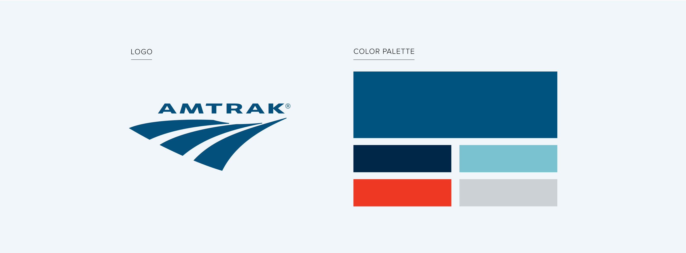
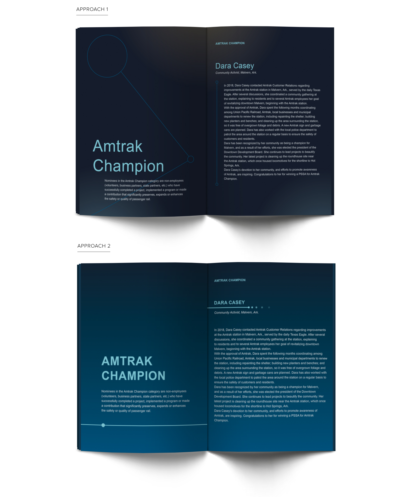
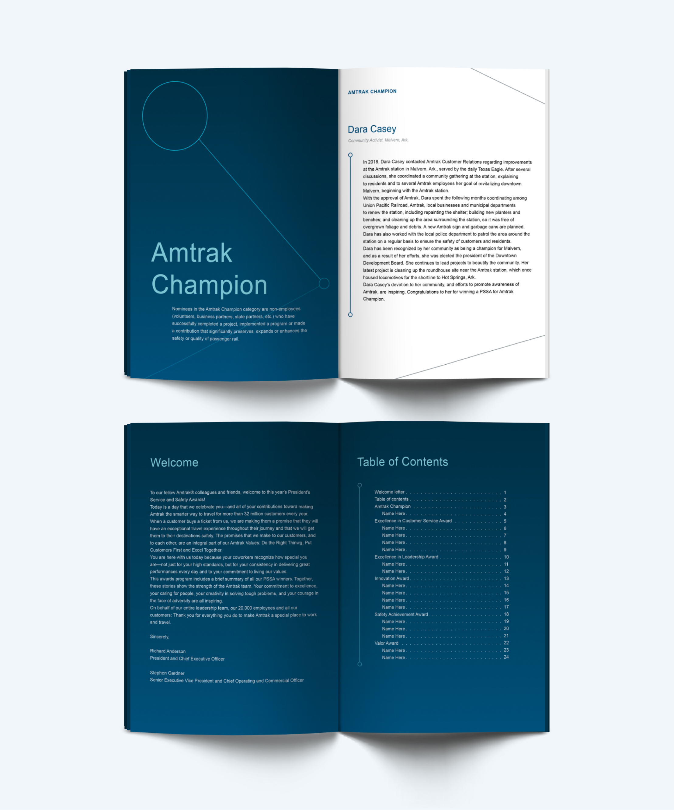
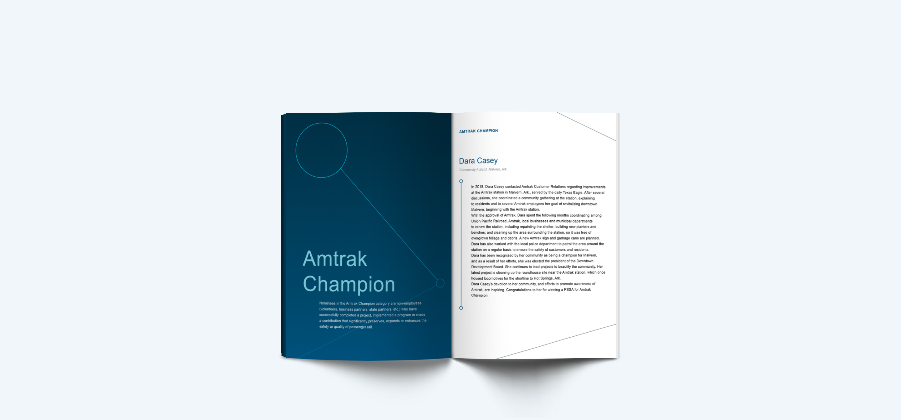
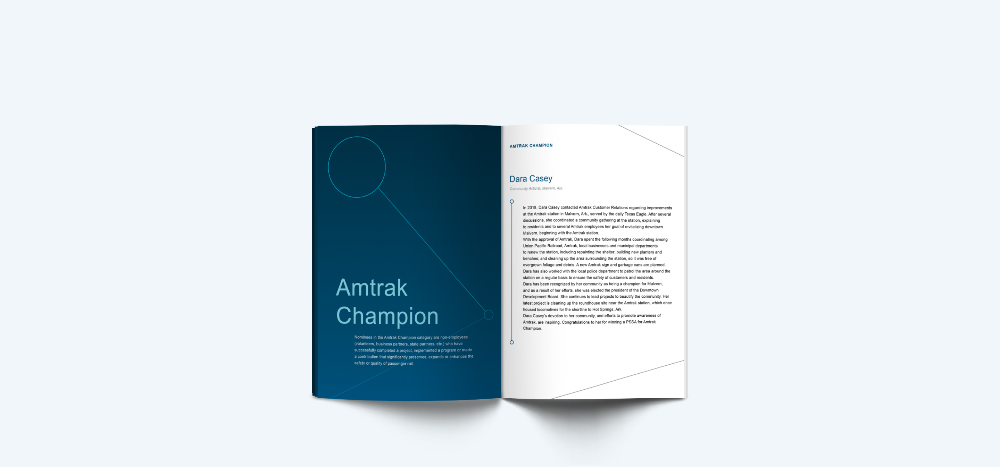

Amtrak
Role: Graphic Design Intern
Date: Spring 2021
Summary: I worked as a Graphic Design Intern for Amtrak during spring of 2021. Within this position, I created multimedia assets for the HR Organizational Effectiveness and Learning Department. These assets included layouts, icons, and charts—all of which either aided the team internally and created design solutions for employee training programs.
Amtrak needed a brochure for its annual President’s Service and Safety Awards (PSSA), which is a series of awards that honor outstanding Amtrak employees. The brochure required an elegant design that highlighted the prestige of the award while staying consistent with Amtrak’s pre-existing branding (as shown below).

I began exploring this design by branching out into two different approaches. In the first approach, I focused on creating a dynamic layout that pushes the boundaries of the Amtrak brand. In the second approach, I adhered more strictly to the Amtrak brand and focused on developing a simple and clean layout.

These two approaches were eventually combined. I drew upon the strengths of each approach to create a new design that best fit the requirements of the brochure. Specifically, I took the dynamic layout of the first approach and combined it with the on-brand color scheme of the second layout. These two elements allowed the design to maintain a sense of uniqueness and sophistication while remaining within the brand standards. Some of these brand standards included the font (Segoe UI), the inclusion of the classic Amtrak blue, and the use of the “journey line” (the line and circle combination as seen on the title pages) that appears in Amtrak designs and advertisements.

 
